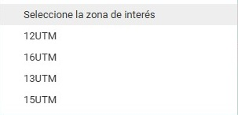

Manual de Usuario
Este manual está diseñado para guiarte paso a paso en el uso del geoportal. Sigue estas instrucciones para aprovechar al máximo todas sus funciones.
Interfaz de usuario
La interfaz del geoportal es sencilla y facil de utilizar. A continuación, te explicamos los elementos que se tienen:
1. Vista prinical del geoportal
Se muestra una vista previa de la pagina y los elementos que se tienen dentro de la misma.

2. Selección del índice
Se debe elegir si el índice sera normalizado o no normalizado

3. Selección de la zona de interés
4. Selección de un año

5. Resultados